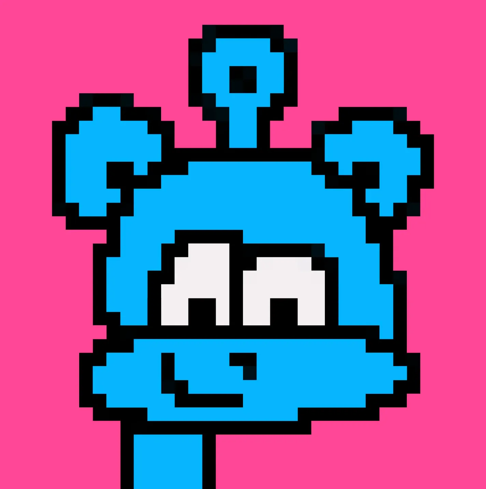
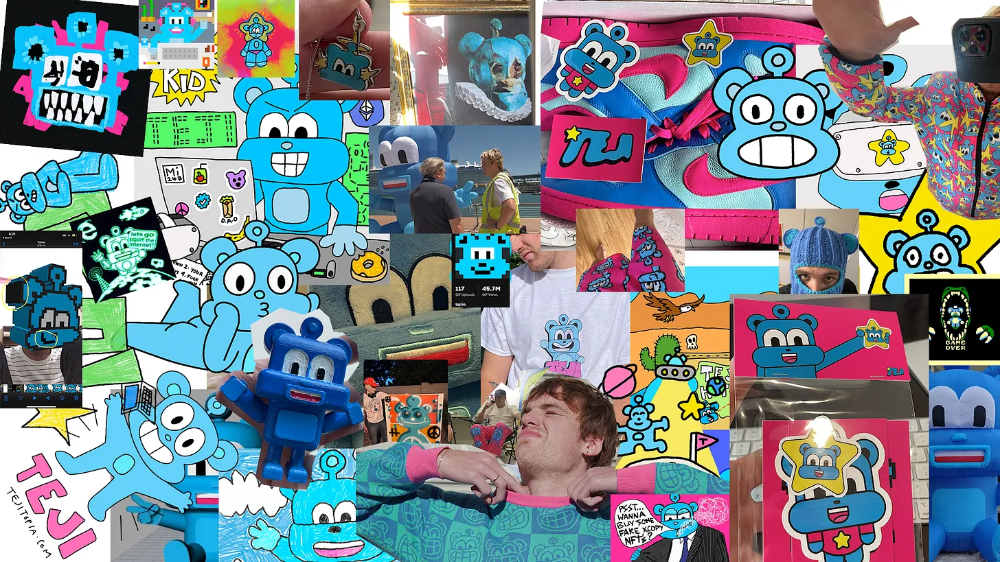

Growing up I’ve always struggled with my identity. I’ve chopped and changed through hundreds of different usernames and alter egos since my first day on the internet. If you met or found me in the past four years you probably knew me as TEJI.
TEJI had become my online identity I formed for myself as I entered into the Crypto and NFT space. I created a character which most of you have probably seen by now to go with my new pseudonym.
It was supposed to be a blue alien but most people thought it had been a bear. At the time I chose the alien because that’s how I felt in the world, like an outsider. I felt like I didn’t fit in and was always on the cusp of two different worlds.
For those who don’t know I’m an Aboriginal Australian with fair skin and red hair. Which meant I was often met with ignorant statements like
“How could you be a real aboriginal your not black?.”
Statements like this not only from friends but also the aboriginal community made me feel unsure of who I was. All I wanted to do was fit in and be normal like everyone else at school. I used to hate my name when I was younger and would often come home from school crying to my mum wishing that she’d given me a normal name. It wasn’t until decades later that I started to love my name and who I am.
I’m forever grateful for the TEJI arc and pseudonym that allowed me to experiment with all kinds of mediums and make hundreds of new friends on the internet. Over the four years as TEJI I made toys, clothes, music and even video games.
TEJI helped me earn my first dollar on the internet as an artist and it helped build my confidence as a creator as I slowly found more like minded people also pursuing the things I was interested in.
In the beginning there was a comfort to sharing my work behind a pseudonym. None of the people I knew in the real world could judge me because they didn’t know it was me behind the work. I was embarrassed about wanting to make art and content online which was why I never shared anything I made under my real name or personal account.
Until slowly I became more confident as I realised it had been my voice all along that people had begun enjoying hearing. It was me and the things I was interested in that they liked. It was my views on the world and how I interacted with it, that people started paying attention to.
It wasn’t because of the colours I used or what I drew but it was because I was having an authentic experience that I wanted to share with the world. People cared because I was a real human being having real world experiences. Which brings me to my next reason why I’m rebranding from TEJI back to my real name Jet Williams.
As we move into the next two or three decades we are going to begin interfacing with more robots and non-human intelligence. Which means identifying as a human online with a real face that people know and trust is going to become more important than ever before.
No longer am I afraid to be Jet Williams.
I’m proud.
Proud of who I am, where I’m from and what I’ve done so far.
I have no idea where I’m going next but I’m excited.
This marks the end of a chapter but the continuation of something thats always been here with me all along.
Myself.
I’m still going to continue making art and content online but from now onwards everything will be under Jet Williams. I will still be making videos, art, items and whatever else I imagine, but this time on even more of a personal level.
All of my social media accounts will change from @tejitopia → @jetlrwilliams
My weekly newsletter will change from TEJI TUESDAYS → JETS JOURNAL
My personal website will change from teji.io → jetlrwilliams.com
One of the final reasons why I wanted to pivot from TEJI to Jet Williams is because I felt like if TEJI were to still exist it would be able to go further as it’s own entity and brand that existed beyond myself.
This doesn’t mean TEJI will be gone forever. I’m just putting a pause on his journey and hopefully bringing him back out at a later date as it’s own thing.
To everyone who has supported me up until now, your support means the world and I have no plans on quitting this journey I’ve embarked on. I’m just taking a moment to look up ahead and pivot accordingly so I can be best prepared for whats to come.
Love,
Jet Williams